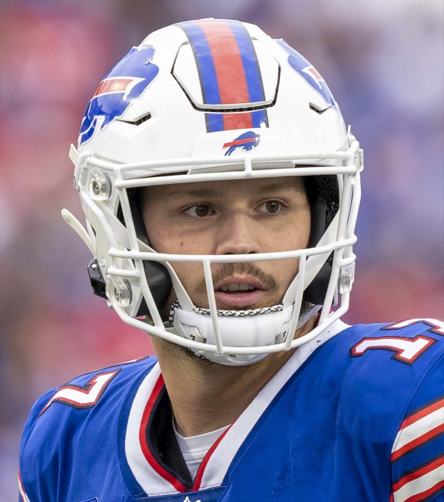
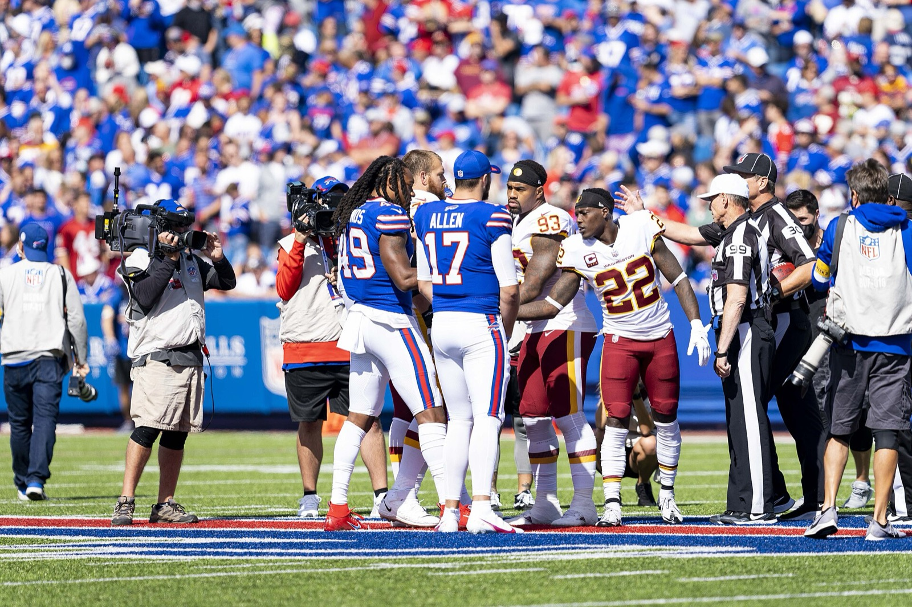
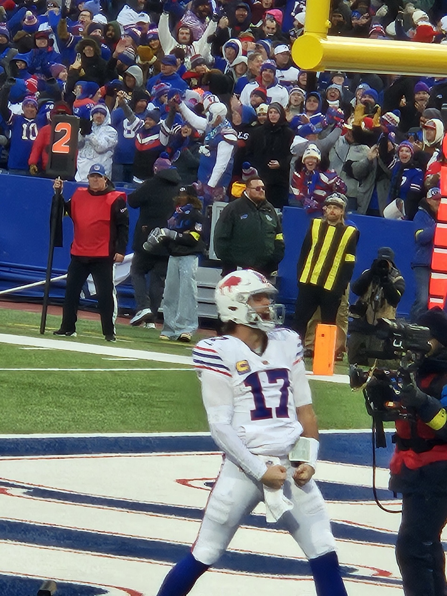
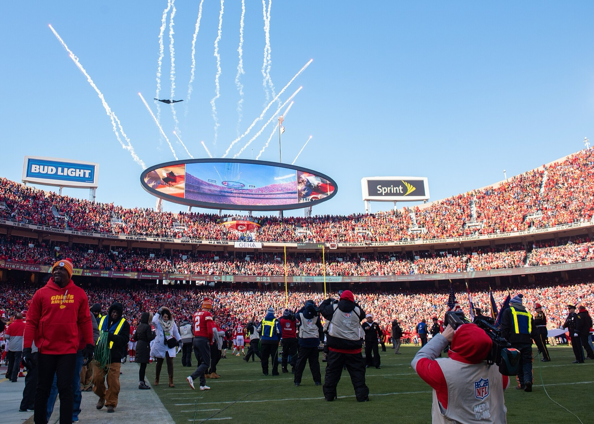
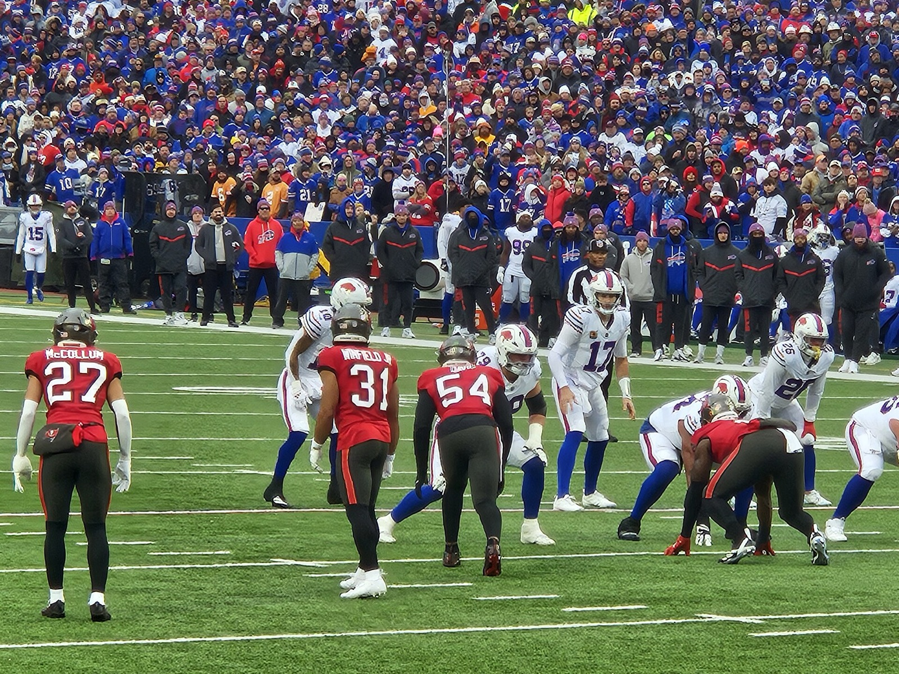
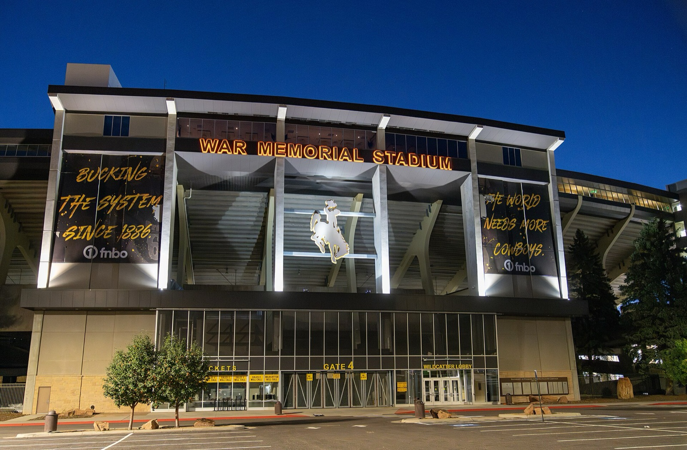
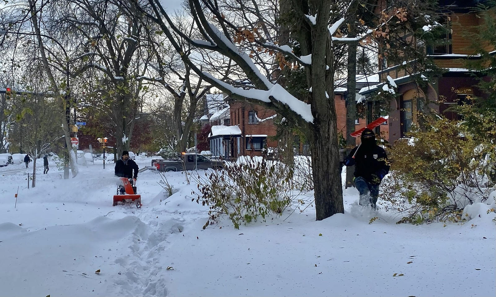

Thirteen seconds.
That's how long the Bills had to protect a lead in Kansas City on January 23, 2022. Their quarterback has a cannon, an MVP trophy and a $330 million contract. He also has seven playoff exits in seven tries. This is the case against Josh Allen.

The play-by-play
Allen played one of the best playoff games a quarterback has ever played. Then the defense handed the ball to Patrick Mahomes with thirteen seconds left.
- 1:54BUF · 4th quarterAllen hits Gabe Davis for a 27-yard touchdown. Buffalo leads 29–26.
- 1:02KCTyreek Hill takes a short pass 64 yards to the house. Kansas City leads 33–29.
- 0:13BUFAllen finds Davis again from 19 yards out, Davis's fourth touchdown of the night. Buffalo leads 36–33.
- 0:13BUF kickoffBuffalo kicks it deep for a touchback. Kansas City gets the ball at its own 25 with no clock used.
- 0:08KCMahomes to Hill, 19 yards.
- 0:03KCMahomes to Travis Kelce, 25 yards, down to the Buffalo 31.
- 0:00KCHarrison Butker kicks a 49-yard field goal. 36–36.
- OTCoin tossKansas City wins the toss. Under the playoff overtime rules of the day, a touchdown on the first drive ends the game.
- FINALKCMahomes to Kelce, 8 yards. Chiefs 42, Bills 36. Allen never touched the ball again.


Six touchdowns in November. Zero Super Bowls in February.
He threw and ran for six touchdowns against Tampa Bay in November 2025. Two months later Buffalo lost in overtime in Denver, in a postseason the Chiefs missed entirely. The obstacle was never Kansas City. It was January.
Pick your evidence

The January Files
Seven postseasons. Seven exits. Four by exactly three points. A full ledger, with a chart.
Open the ledger →
The Tape
Fumbled snaps, four-turnover openers, two years at the bottom of the league in completion rate, and a hurdle habit.
Review the film →
Origin Story
No Division I scholarship offers out of high school. Every college coach who passed had a point. For a while.
Read the backstory →
Excuse Desk
An excuse generator for Bills fans, playoff bingo, and a running count of days since Buffalo last saw a Super Bowl.
Start making excuses →